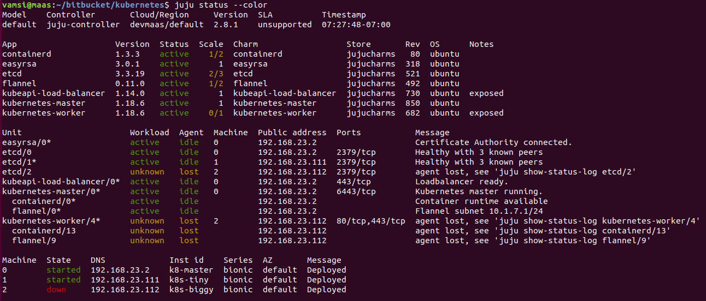
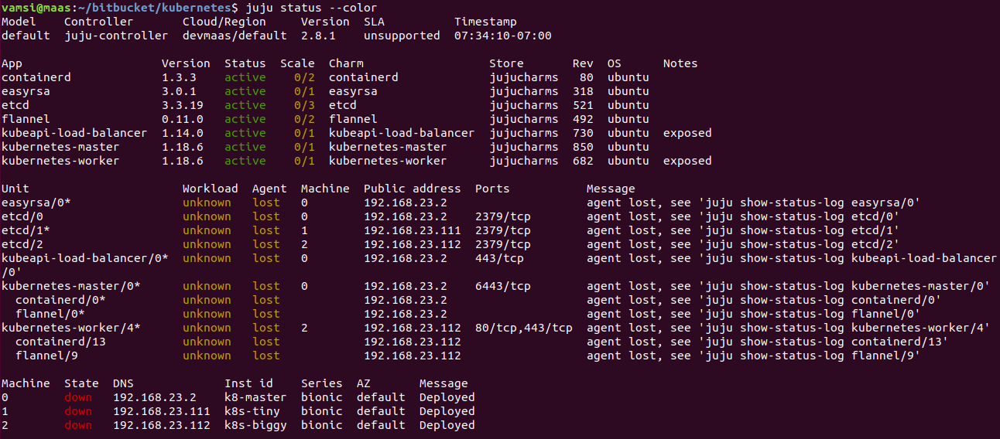

New + Commissioning ➡ Ready)Previously I used the setup instructions from https://medium.com/@madushan1000/how-to-run-kubernetes-on-bare-metal-with-maas-juju-d5ba8e981710 but now switching to overlays to use the same effect. Overlays allow me to:
My node config
3 Node install
flannel and containerd on all machines
| Machine | Charms |
|---|---|
| Tiny1 | master, kubeapi-load-balancer, etcd, easyrsa |
| Tiny2 | worker or later reserve for CI/CD, Docker registry etc |
| Big 1 | worker, gpu |
Since this will be a simple low-load cluster, I want to see if I can get away with minimal machine counts.
I can use the same setup except with just one master. Also I want to eventually publish to a private docker registry (on Tiny 2).
Note: docker-registry is to be installed after the k8s clustering is done. It is not clear if the private registry needs to store all needed docker images or if k8s will go the public registry for missing entries ? l8r.
Wanted to create an overlay to achieve the same node-deployment as https://medium.com/@madushan1000/how-to-run-kubernetes-on-bare-metal-with-maas-juju-d5ba8e981710. However, simply copying stuff lead to various confusing errors.
| Error | Resolution |
|---|---|
-to : '0' |
errors about not being able to parse into a []string. Took the hint and tried -to : ['0'] and that worked |
| service key deprecated | Painful error. Main bundle still uses 'services' but deprecated for overlays!! https://discourse.charmhub.io/t/charm-bundles/1058 says to simply use applications: instead. Worked even though bundle uses services: |
Using the same node count as https://medium.com/@madushan1000/how-to-run-kubernetes-on-bare-metal-with-maas-juju-d5ba8e981710 to get the above config. I end up with the following overlay file
Locate the latest bundles for each version of k8s (may need older versions of k8s based on what KF etc wants). Look at


Used the bundle:733 from https://charmhub.io/charmed-kubernetes
# Deployment
# machine - 0: m93p (i7 4 Core + 16GB RAM)
# - etcd
# - easyrsa
# - kubeapi-load-balancer
# - kubernetes-master
#
# machine - 1: m93p (i7 4 Core + 16GB RAM)
# - kubernetes-worker
#
# machine - 2: Threadripper 32 core + 64GB RAM + 2080Ti
# - kubernetes-worker
description: overlay for dev-maas installation on 3 nodes
series: focal
machines:
'0':
constraints: tags=k8s,k8s_master
'1':
constraints: tags=k8s,k8s_worker
'2':
constraints: tags=k8s,k8s_worker,gpu
# https://discourse.charmhub.io/t/charm-bundles/1058 says that 'services'
# is deprecated, use applications instead.
applications:
easyrsa:
num_units: 1
to: ['0']
etcd:
num_units: 1
to: ['0']
kubeapi-load-balancer:
num_units: 1
to: ['0']
kubernetes-master:
num_units: 1
to: ['0']
kubernetes-worker:
num_units: 2
to: ['1', '2']
Not sure I grok the model bit fully. From what I understand
Enables neat things
juju destroy-model <modelName>: Mind the need for --destroy-storageadd-unit things. You can dump out the latest-model configuration as a bundle.| Model operation | Cmd |
|---|---|
| Adding model | juju add-model modelName |
| Deploying to a model | juju -m modelName .. |
| Destroying a model | juju destroy-model modelName |
| Switch to a model | juju switch modelName |
| Listing models | juju models |
Want to keep the nomenclature clear here. This is a model of deployment on MAAS. Later, we will have
kubernetesdeployments: pods and such which will end up on a different model which we'll call k8s-model
juju add-model maas-k8s-model
vamsi@MAAS:~/bitbucket/infrastructure/configs/juju/bundles$ juju add-model maas-k8s-model
Added 'maas-k8s-model' model on devmaas/default with credential 'devmaas-admin-creds' for user 'admin'
vamsi@MAAS:~/bitbucket/infrastructure/configs/juju/bundles$ juju status --color
Model Controller Cloud/Region Version SLA Timestamp
maas-k8s-model maas devmaas/default 2.8.6 unsupported 19:06:13-08:00
Model "admin/maas-k8s-model" is empty.
Dry run with the downloaded bundle from https://jaas.ai/canonical-kubernetes
Note
-m maas-k8s-modelto deploy to the k8s model- release number retained in the bundle name. This allows me to upgrade periodically as I see newer releases.
- I see no way to customize the default
juju-clustername given to this k8 cloud it creates!
vamsi@MAAS:~/bitbucket/infrastructure/configs/juju/bundles$ juju deploy -m maas-k8s-model --dry-run ./charmed-k8s-focal-733-bundle.yaml --overlay ./charmed-k8s-focal-733-devmaas-overlay.yaml
WARNING "services" key found in bundle file is deprecated, superseded by "applications" key.
Located charm "containerd" in charm-store, revision 146
Located charm "easyrsa" in charm-store, revision 395
Located charm "etcd" in charm-store, revision 607
Located charm "flannel" in charm-store, revision 571
Located charm "kubeapi-load-balancer" in charm-store, revision 814
Located charm "kubernetes-master" in charm-store, revision 1034
Located charm "kubernetes-worker" in charm-store, revision 788
Changes to deploy bundle:
- upload charm containerd from charm-store for series focal with architecture=amd64
- deploy application containerd from charm-store on focal
- set annotations for containerd
- upload charm easyrsa from charm-store for series focal with architecture=amd64
- deploy application easyrsa from charm-store on focal
- set annotations for easyrsa
- upload charm etcd from charm-store for series focal with architecture=amd64
- deploy application etcd from charm-store on focal
- set annotations for etcd
- upload charm flannel from charm-store for series focal with architecture=amd64
- deploy application flannel from charm-store on focal
- set annotations for flannel
- upload charm kubeapi-load-balancer from charm-store for series focal with architecture=amd64
- deploy application kubeapi-load-balancer from charm-store on focal
- expose all endpoints of kubeapi-load-balancer and allow access from CIDRs 0.0.0.0/0 and ::/0
- set annotations for kubeapi-load-balancer
- upload charm kubernetes-master from charm-store for series focal with architecture=amd64
- deploy application kubernetes-master from charm-store on focal
- set annotations for kubernetes-master
- upload charm kubernetes-worker from charm-store for series focal with architecture=amd64
- deploy application kubernetes-worker from charm-store on focal
- expose all endpoints of kubernetes-worker and allow access from CIDRs 0.0.0.0/0 and ::/0
- set annotations for kubernetes-worker
- add new machine 0
- add new machine 1
- add new machine 2
- add relation kubernetes-master:kube-api-endpoint - kubeapi-load-balancer:apiserver
- add relation kubernetes-master:loadbalancer - kubeapi-load-balancer:loadbalancer
- add relation kubernetes-master:kube-control - kubernetes-worker:kube-control
- add relation kubernetes-master:certificates - easyrsa:client
- add relation etcd:certificates - easyrsa:client
- add relation kubernetes-master:etcd - etcd:db
- add relation kubernetes-worker:certificates - easyrsa:client
- add relation kubernetes-worker:kube-api-endpoint - kubeapi-load-balancer:website
- add relation kubeapi-load-balancer:certificates - easyrsa:client
- add relation flannel:etcd - etcd:db
- add relation flannel:cni - kubernetes-master:cni
- add relation flannel:cni - kubernetes-worker:cni
- add relation containerd:containerd - kubernetes-worker:container-runtime
- add relation containerd:containerd - kubernetes-master:container-runtime
- add unit easyrsa/0 to new machine 0
- add unit etcd/0 to new machine 0
- add unit kubeapi-load-balancer/0 to new machine 0
- add unit kubernetes-master/0 to new machine 0
- add unit kubernetes-worker/0 to new machine 1
- add unit kubernetes-worker/1 to new machine 2
The add unit lines at the end show the expected deployment
Note the
-m maas-k8s-modelto deploy to themaas-k8s-modelmodel
juju deploy -m maas-k8s-model ./charmed-k8s-focal-733-bundle.yaml --overlay ./charmed-k8s-focal-733-devmaas-overlay.yaml
juju status --colorwatch --color -n5 juju status --colorAfter manual successful deployments, I suddenly ran into an error with nvidia drivers. Not sure if nvidia changed something or some server has bad data. In any case, simply following the latest nvidia driver installation worked.
Specifically
cuda-drivers and nvidia-container-runtimewget https://developer.download.nvidia.com/compute/cuda/repos/ubuntu2004/x86_64/cuda-ubuntu2004.pin
sudo mv cuda-ubuntu2004.pin /etc/apt/preferences.d/cuda-repository-pin-600
wget https://developer.download.nvidia.com/compute/cuda/11.4.1/local_installers/cuda-repo-ubuntu2004-11-4-local_11.4.1-470.57.02-1_amd64.deb
sudo dpkg -i cuda-repo-ubuntu2004-11-4-local_11.4.1-470.57.02-1_amd64.deb
sudo apt-key add /var/cuda-repo-ubuntu2004-11-4-local/7fa2af80.pub
sudo apt-get update
sudo apt-get -y install cuda-drivers
sudo apt-get -y install nvidia-container-runtime
juju resolved containerd/0 or whatever the contained unit is that is failing because of the nvidia install.juju ssh kubernetes-worker/1 nvidia-smi doesn't show the expected output (maybe wait till juju-wait returns)Finally, to get kubectl to control the kubernetes cluster (as well as getting juju to control it) we need to copy over a configuration that specifies the newly created cluster. Use
mkdir ~/.kubejuju scp kubernetes-master/0:/home/ubuntu/config ~/.kube/config.This is awesome as we address the juju application unit instead of the machine itself.
The latest kubernetes-worker charm is supposed to automatically handle GPGPU integration (NVidia, Cuda). So right after k8s was installed, I tried to check this via nvidia-smi:
juju ssh kubernetes-worker/1 nvidia-smi: got a unable to communicate with driver (/var/log/juju/unit-kubernetes-worker-1.log on that machine displayed the same thing in the logs)
Turns out, the machine needs to be rebooted use
juju ssh kubernetes-worker/1 sudo poweroffand reboot wait forjuju statusto show all green and try again
nvidia-smi reports things as expected.vamsi@MAAS:~/bitbucket/infrastructure/configs/juju/bundles$ juju ssh kubernetes-worker/1 nvidia-smi
Fri Feb 26 17:53:17 2021
+-----------------------------------------------------------------------------+
| NVIDIA-SMI 460.39 Driver Version: 460.39 CUDA Version: 11.2 |
|-------------------------------+----------------------+----------------------+
| GPU Name Persistence-M| Bus-Id Disp.A | Volatile Uncorr. ECC |
| Fan Temp Perf Pwr:Usage/Cap| Memory-Usage | GPU-Util Compute M. |
| | | MIG M. |
|===============================+======================+======================|
| 0 GeForce RTX 208... Off | 00000000:21:00.0 Off | N/A |
| 24% 30C P8 23W / 250W | 14MiB / 11019MiB | 0% Default |
| | | N/A |
+-------------------------------+----------------------+----------------------+
+-----------------------------------------------------------------------------+
| Processes: |
| GPU GI CI PID Type Process name GPU Memory |
| ID ID Usage |
|=============================================================================|
| 0 N/A N/A 2094 G /usr/lib/xorg/Xorg 8MiB |
| 0 N/A N/A 2668 G /usr/bin/gnome-shell 3MiB |
+-----------------------------------------------------------------------------+
Connection to 192.168.23.113 closed.
```console
### Verify at K8s level
```console
vamsi@MAAS:~/bitbucket/infrastructure/configs/juju$ kubectl get no -o wide -L cuda,gpu
NAME STATUS ROLES AGE VERSION INTERNAL-IP EXTERNAL-IP OS-IMAGE KERNEL-VERSION CONTAINER-RUNTIME CUDA GPU
big-boy Ready <none> 6h8m v1.20.4 192.168.23.113 <none> Ubuntu 20.04.2 LTS 5.4.0-66-generic containerd://1.3.3-0ubuntu2.2 true true
tiny2 Ready <none> 6h8m v1.20.4 192.168.23.112 <none> Ubuntu 20.04.2 LTS 5.4.0-66-generic containerd://1.3.3-0ubuntu2.2
For now (Feb 2021), k8s GPU integration is performing default nvidia installations which turns the XServer on and sets graphical runlevels (See below). This enable pwer saving sleep and the machine drops out from the cloud soon after. Fiddling with the actual driver/cuda installs might mess up more things so am simply fixing sleep.
juju ssh kubernetes-worker/1 systemctl status sleep.targetjuju ssh kubernetes-worker/1 sudo systemctl mask sleep.target suspend.target hibernate.target hybrid-sleep.targetjuju ssh kubernetes-worker/1 systemctl status sleep.targetvamsi@MAAS:~$ juju ssh kubernetes-worker/1 systemctl status sleep.target
● sleep.target - Sleep
Loaded: loaded (/lib/systemd/system/sleep.target; static; vendor preset: enabled)
Active: inactive (dead)
Docs: man:systemd.special(7)
Connection to 192.168.23.113 closed.
vamsi@MAAS:~$ juju ssh kubernetes-worker/1 sudo systemctl mask sleep.target suspend.target hibernate.target hybrid-sleep.target
Created symlink /etc/systemd/system/sleep.target → /dev/null.
Created symlink /etc/systemd/system/suspend.target → /dev/null.
Created symlink /etc/systemd/system/hibernate.target → /dev/null.
Created symlink /etc/systemd/system/hybrid-sleep.target → /dev/null.
Connection to 192.168.23.113 closed.
vamsi@MAAS:~$ juju ssh kubernetes-worker/1 systemctl status sleep.target
● sleep.target
Loaded: masked (Reason: Unit sleep.target is masked.)
Active: inactive (dead)
Connection to 192.168.23.113 closed.
sudo snap install kubectl --classicvamsi@MAAS:~/bitbucket/infrastructure/configs/juju$ kubectl cluster-info
Kubernetes control plane is running at https://192.168.23.111:443
CoreDNS is running at https://192.168.23.111:443/api/v1/namespaces/kube-system/services/kube-dns:dns/proxy
Metrics-server is running at https://192.168.23.111:443/api/v1/namespaces/kube-system/services/https:metrics-server:/proxy
To further debug and diagnose cluster problems, use 'kubectl cluster-info dump'.
- When juju controller is bootstreapped onto the k8s cloud, we need storage setup so it can request space. This must be done before bootstrapping.
- 👉 On MAAS, check the DNS and verify the IP assigned to the NAS. Update it in the config files as needed.
I had tried various things and waster a ton of time writing my own charm (which either was broken or the kubernetes-worker relationship was broken). Finally discovered a new app from google maybe which worked out great.
Setup steps: see ./3-juju-k8s-storage.md
vamsi@MAAS:~/bitbucket/infrastructure/k8s/nfs$ kubectl get sc
NAME PROVISIONER RECLAIMPOLICY VOLUMEBINDINGMODE ALLOWVOLUMEEXPANSION AGE
managed-nfs-storage k8s-sigs.io/nfs-subdir-external-provisioner Delete Immediate false 9m53s
So it looks like even though juju installed kubernetes as a set of bundles, it needs to be told to recognize it as a k8s cloud: a cloudy deployment target (this makes sense since juju can be asked to manage any k8s cloud). This allows juju to deploy kubernetes pods to the kubernetes cluster as well. Basically, juju can deploy apps to a machine cluster or kubernetes apps to a kubernetes cluster within a given machine cluster.
This registration and the subsequent model creation triggers k8s specific configuration in juju.
juju add-k8s myk8scloud
vamsi@MAAS:~/bitbucket/infrastructure/k8s/nfs$ juju add-k8s myk8scloud
This operation can be applied to both a copy on this client and to the one on a controller.
Do you want to add k8s cloud myk8scloud to:
1. client only (--client)
2. controller "maas" only (--controller maas)
3. both (--client --controller maas)
Enter your choice, or type Q|q to quit: 1
k8s substrate added as cloud "myk8scloud" with storage provisioned
by the existing "managed-nfs-storage" storage class.
You can now bootstrap to this cloud by running 'juju bootstrap myk8scloud'.
Note that it has found the kubernetes sc and reported it.
juju bootstrap myk8scloud
vamsi@MAAS:~/bitbucket/infrastructure/k8s/nfs$ juju bootstrap myk8scloud
Creating Juju controller "myk8scloud" on myk8scloud
Bootstrap to generic Kubernetes cluster
Fetching Juju Dashboard 0.8.1
Creating k8s resources for controller "controller-myk8scloud"
Downloading images
Starting controller pod
Bootstrap agent now started
Contacting Juju controller at 10.152.183.192 to verify accessibility...
Bootstrap complete, controller "myk8scloud" is now available in namespace "controller-myk8scloud"
Now you can run
juju add-model <model-name>
to create a new model to deploy k8s workloads.
Apparently (from a lot of resources) simply doing juju add-k8s should be enough, but I get a ERROR missing k8ds name. Maybe it can target multiple kubernetes clusters. From the config file, I see a name: juju-cluster field, maybe thats the one to use
While juju add-k8s juju-cluster should work, this discussion states that we must use juju add-k8s k8s-cloud --local --cloud=MAAS --region=<fake>. Apparently this allows juju to create the correct load-balance for the controller! The previous one simply worked in the past though, now that I have storage configured correctly, the old one should work just as well. No ?
vamsi@MAAS:~$ juju add-k8s juju-cluster
This operation can be applied to both a copy on this client and to the one on a controller.
Do you want to add k8s cloud juju-cluster to:
1. client only (--client)
2. controller "juju-controller" only (--controller juju-controller)
3. both (--client --controller juju-controller)
Enter your choice, or type Q|q to quit: 3
k8s substrate added as cloud "juju-cluster" with storage provisioned
by the existing "default" storage class.
You can now bootstrap to this cloud by running 'juju bootstrap juju-cluster'.
kubectl proxy which gives a localhost:8001On visit, it offers two ways of auth, choose the config and upload the saved .kube/config file.
Strangely hardly any docs. Guess everyone simply uses a cloud provider for the most part or tear-down/recreate as needed.
From the official docs, it looks like
| Unit | Steps | Notes |
|---|---|---|
| Node | Drain | removes all pods. Subject to pod budgets so involved maybe kubectl drain <node name> --delete-local-data --force --ignore-daemonsets |
| Node | Reset | Reset the state installed by kubeadmkubeadmn reset |
| Node | Clear iptables | Apparently not done by reset iptables -F && iptables -t nat -F && iptables -t mangle -F && iptables -X |
| Node | Clear ipvs | Hmm, a native linux virtual server /cluster stuffipvsadm -C |
| Node | Remove node | kubectl delete node <node name> |
| Control Pane | Reset | kubeadm reset on control pane node Comfortingly does a best-attempt |
Looks complex and may not work either: needs experimentation. At a minimum pods need to be drained out so that needs work.
Destroying the cluster is certainly an option.
* kubectl drain all nodes
* juju destroy model
Later bringing it up
* MAAS set to Ready
* juju deploy model
30-45 minutes cost to bring it up later on but guaranteed fresh.
Need to experiment * kubectl drain all nodes * juju remove-unit kubernetes-worker/0 * juju remove-unit kubernetes-worker/1 * juju remove-unit etcd/1 * juju remove-unit etcd/2
Can keep the master running (small enough PC). If that needs to go as well * juju remove easyrsa/0 * juju remove etcd/0 * juju remove kubeapi-load-balancer/0 * juju remove kubernetes-master/0
Can run basic experiments now but ideally after I have a single test app working on k8s which means building a docker container and all that.
Remove Unit & Shutdown
juju remove-unit kubernetes-worker/0 and then status shows
* containerd (maintenance ->stop -> terminated)
* kubernetes-worker/0 (maintenance -> blocked -> gone)
* etcd/2 is Workload:Unknown Agent:lost
* Node itself (machine 2) is still on
juju ssh 2 sudo poweroff
* juju status shows machine as down
Power on and Add Unit
* Power Cycle node k8s-biggy from MAAS UI
* `juju add-unit kubernetes-worker --to 2`
* installs sharm software, containerd, nvidia drivers etc again (per status: not sure how it actually could be reinstalling)
* Then kubernetes-master stuck in *waiting for 3 kube-system pods* for a while
* Quite slow process actually.
Worked. However, I see that though I have done nothing, etcd/2 running on k8s-biggy also came back up. Maybe I simply have to shut the node down and bring it up ?
* Ideally, drain the pods first
* `juju ssh 2 sudo poweroff`

Power it back on under MAAS
Yay. Came back up and status was all green within 2 minutes. Definitely the best solution so far for bringing a power hungry worker down.
Power Down * Workers first * master last

Power up
* Master first
* Workers next
All green in a few minutes
* However, two of the etcd instances say UnHealthy with two peers while one says Healthy with two peers
* All healthy in a few minutes
* So great. I can bring the whole cluster down and up fast. If I leave master alone, I leave the etcds alone. Thought maybe I could get away with just one etcd.
Follow progress using watch --color juju status --color
Instead of dealing with roundtrips to docker and pulling things down from it, I thought it'd be simpler for now to have a local registry for the pods to pull their images from.
sudo apt update -y
sudo apt-get install apt-transport-https ca-certificates curl gnupg-agent software-properties-common
curl -fsSL https://download.docker.com/linux/ubuntu/gpg | sudo apt-key add -
lsb_release -cs returns the name of the distribution.
sudo add-apt-repository \
"deb [arch=amd64] https://download.docker.com/linux/ubuntu \
$(lsb_release -cs) \
stable"
sudo apt-get update
sudo apt-get install docker-ce docker-ce-cli containerd.io
vamsi@maas:~/bitbucket/kubernetes$ systemctl status docker
● docker.service - Docker Application Container Engine
Loaded: loaded (/lib/systemd/system/docker.service; enabled; vendor preset: enabled)
Active: active (running) since Sat 2020-08-01 00:46:05 PDT; 26s ago
Docs: https://docs.docker.com
Main PID: 26847 (dockerd)
Tasks: 13
CGroup: /system.slice/docker.service
└─26847 /usr/bin/dockerd -H fd:// --containerd=/run/containerd/containerd.sock
Aug 01 00:46:05 maas dockerd[26847]: time="2020-08-01T00:46:05.009901793-07:00" level=warning msg="Your kernel does not support cgroup rt runti
Aug 01 00:46:05 maas dockerd[26847]: time="2020-08-01T00:46:05.009908104-07:00" level=warning msg="Your kernel does not support cgroup blkio we
Aug 01 00:46:05 maas dockerd[26847]: time="2020-08-01T00:46:05.009919727-07:00" level=warning msg="Your kernel does not support cgroup blkio we
Aug 01 00:46:05 maas dockerd[26847]: time="2020-08-01T00:46:05.010114868-07:00" level=info msg="Loading containers: start."
Aug 01 00:46:05 maas dockerd[26847]: time="2020-08-01T00:46:05.131581644-07:00" level=info msg="Default bridge (docker0) is assigned with an IP
Aug 01 00:46:05 maas dockerd[26847]: time="2020-08-01T00:46:05.225912455-07:00" level=info msg="Loading containers: done."
Aug 01 00:46:05 maas dockerd[26847]: time="2020-08-01T00:46:05.304930857-07:00" level=info msg="Docker daemon" commit=48a66213fe graphdriver(s)
Aug 01 00:46:05 maas dockerd[26847]: time="2020-08-01T00:46:05.305071697-07:00" level=info msg="Daemon has completed initialization"
Aug 01 00:46:05 maas dockerd[26847]: time="2020-08-01T00:46:05.360820586-07:00" level=info msg="API listen on /var/run/docker.sock"
Aug 01 00:46:05 maas systemd[1]: Started Docker Application Container Engine.
vamsi@maas:~/bitbucket/kubernetes$ sudo docker run hello-world
Unable to find image 'hello-world:latest' locally
latest: Pulling from library/hello-world
0e03bdcc26d7: Pull complete
Digest: sha256:49a1c8800c94df04e9658809b006fd8a686cab8028d33cfba2cc049724254202
Status: Downloaded newer image for hello-world:latest
Hello from Docker!
This message shows that your installation appears to be working correctly.
To generate this message, Docker took the following steps:
1. The Docker client contacted the Docker daemon.
2. The Docker daemon pulled the "hello-world" image from the Docker Hub.
(amd64)
3. The Docker daemon created a new container from that image which runs the
executable that produces the output you are currently reading.
4. The Docker daemon streamed that output to the Docker client, which sent it
to your terminal.
To try something more ambitious, you can run an Ubuntu container with:
$ docker run -it ubuntu bash
Share images, automate workflows, and more with a free Docker ID:
https://hub.docker.com/
For more examples and ideas, visit:
https://docs.docker.com/get-started/
Ref: https://geekflare.com/docker-private-registry-ubuntu/
docker pull registry
vamsi@maas:~/bitbucket/kubernetes$ sudo docker pull registry
Using default tag: latest
latest: Pulling from library/registry
cbdbe7a5bc2a: Pull complete
47112e65547d: Pull complete
46bcb632e506: Pull complete
c1cc712bcecd: Pull complete
3db6272dcbfa: Pull complete
Digest: sha256:8be26f81ffea54106bae012c6f349df70f4d5e7e2ec01b143c46e2c03b9e551d
Status: Downloaded newer image for registry:latest
docker.io/library/registry:latest
Turns out I got the MAAS tags wrong in the overlay file and juju was simply searching for kf_master when it should have been kubeflow.
juju destroy-model k8sjuju add-model k8sjuju deploy -m k8s...After juju deploy, it sends information to the controller and quits. Juju-controller takes over after that I guess. A few seconds later, Maas UI shows:
* Nodes with managed power turned on and showed a status of Deploying Ubuntu.
* Nodes with manual power showed Deploying Ubuntu and needed me to power them on manually (and ensure PXE boot)
Check using juju status --color and it turns out it seems to be waiting for two more machines: a second master and a third node. I forgot to edit the num_units items in the bundle. Edited those and simply ran a juju deploy ./configs/charmed-k8s-464-bundle.yaml and it updated the config.
Took a while for everything to come up. Not sure how long as I crashed and am checking status early next day.

num_units: ) in the bundle and deploying it out did not actually change things. It seems to still be expecting the two extra nodes.remove-unit commandvamsi@maas:~/bitbucket/kubernetes$ juju remove-unit kubernetes-master/1
removing unit kubernetes-master/1
vamsi@maas:~/bitbucket/kubernetes$ juju remove-unit kubernetes-worker/2
removing unit kubernetes-worker/2
and that worked

Started noticing wierd problems with this: after some time, the big-boy node would simply sleep. Initially I thought it was a crash and the power-supply or something had died: however
last does not show me a crash.Following online instructions, I have some options to explore:
vamsi@MAAS:~$ juju ssh kubernetes-worker/1 systemctl status sleep.target
● sleep.target - Sleep
Loaded: loaded (/lib/systemd/system/sleep.target; static; vendor preset: enabled)
Active: inactive (dead)
Docs: man:systemd.special(7)
Connection to 192.168.23.113 closed.
vamsi@MAAS:~$ juju ssh kubernetes-worker/1 sudo systemctl mask sleep.target suspend.target hibernate.target hybrid-sleep.target
Created symlink /etc/systemd/system/sleep.target → /dev/null.
Created symlink /etc/systemd/system/suspend.target → /dev/null.
Created symlink /etc/systemd/system/hibernate.target → /dev/null.
Created symlink /etc/systemd/system/hybrid-sleep.target → /dev/null.
Connection to 192.168.23.113 closed.
vamsi@MAAS:~$ juju ssh kubernetes-worker/1 systemctl status sleep.target
● sleep.target
Loaded: masked (Reason: Unit sleep.target is masked.)
Active: inactive (dead)
Connection to 192.168.23.113 closed.